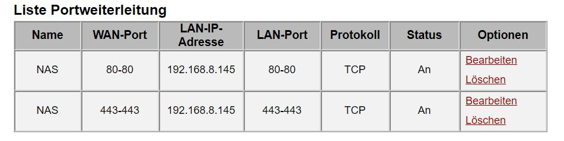
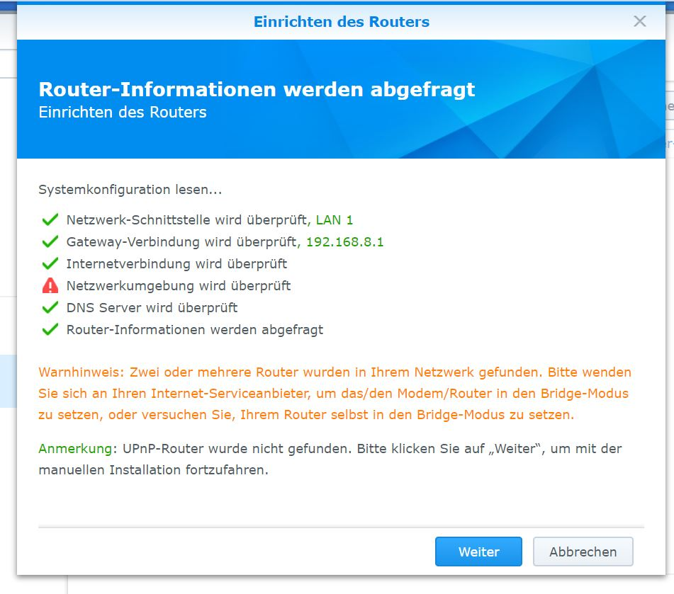

{kind=link}
Hallo @Jhagaert !
APN auf Business umstellen bzw. neuen APN erstellen:

- Profilname ist frei wählbar
- Benutzername: t-mobile
- Passwort: tm
- APN: business.gprsinternet
- Rufnummer: *99# (eventuell nicht nötig)
lg
Bearbeitet von 5igi3lue
Ergänzung
Hallo Zusammen ich habe eine Synology NAS und versuche diese von außen zu erreichen. Portweiterleitung habe ich eingerichtet. Aber ich komme einfach nicht weiter oder habe ich etwas übersehen?
Danke für Hilfe
 
Bearbeitet von Jhagaert
Hast du den APN auf business umgestellt? Wie kommst du denn von außen in dein Netzwerk? Hast du DDNS konfiguriert?
vor 8 Stunden schrieb MarioM:Hast du den APN auf business umgestellt? Wie kommst du denn von außen in dein Netzwerk? Hast du DDNS konfiguriert?
Hallo Mario,
was muss ich bei meiner APN umstellen, dass ich business habe? Ich habe meine Portweiterleitung im B529s konfiguriert und in der NAS meine DDNS aktiviert. Was müsste ich noch machen? Vielen Dank schonmal
vor 7 Stunden schrieb -_Andrea:Hallo Jhagaert,
MarioM hat dir schon einmal die ersten beiden hilfreichen Tipps gegeben. Mit diesen beiden Einstellungen habe ich auch bei mir daheim die Synology mit dem Router zum Laufen gebracht und seitdem funktioniert da auch alles ohne Probleme. Bitte teste das einmal.
Solltest du danach noch immer Probleme haben, dann melde dich bitte einfach wieder hier.
LG Andrea
Hallo Andrea,
ich würde gerne dann von deinem Angebot Gebrauch machen falls ich nicht weiterkomme.
Grüße
Hallo @Jhagaert !
APN auf Business umstellen bzw. neuen APN erstellen:
lg
Bearbeitet von 5igi3lue
@-_Andrea hat jetzt funktioniert. Vielen Dank
Hallo Jhagaert,
Ich habe mir heute ein Synology NAS-Server gekauft und ich habe auch das Problem von außen zugreifen.
Ich möchte mir d. FTP server einrichten damit ich extern über d. xxx.synology.me verbinden kann.
Vielen Dank
Lg Thomas
Hallo Thomas,
hast du schon irgendetwas eingerichtet?
Oder brauchst du eine genauere Anleitung?
Lg